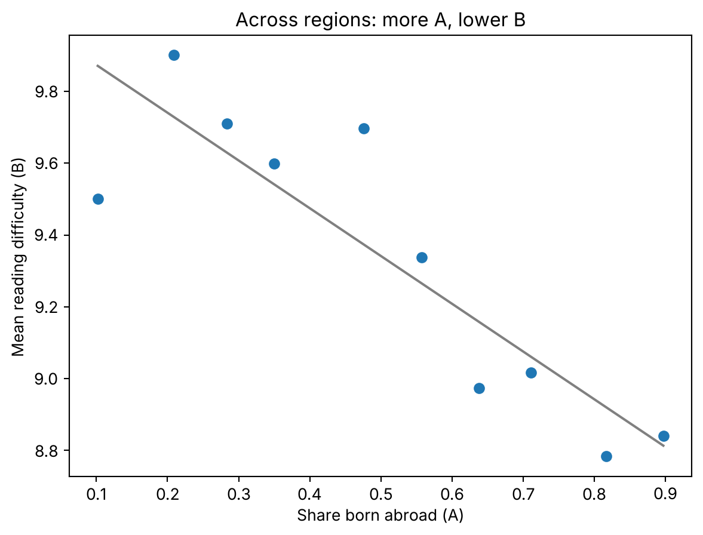
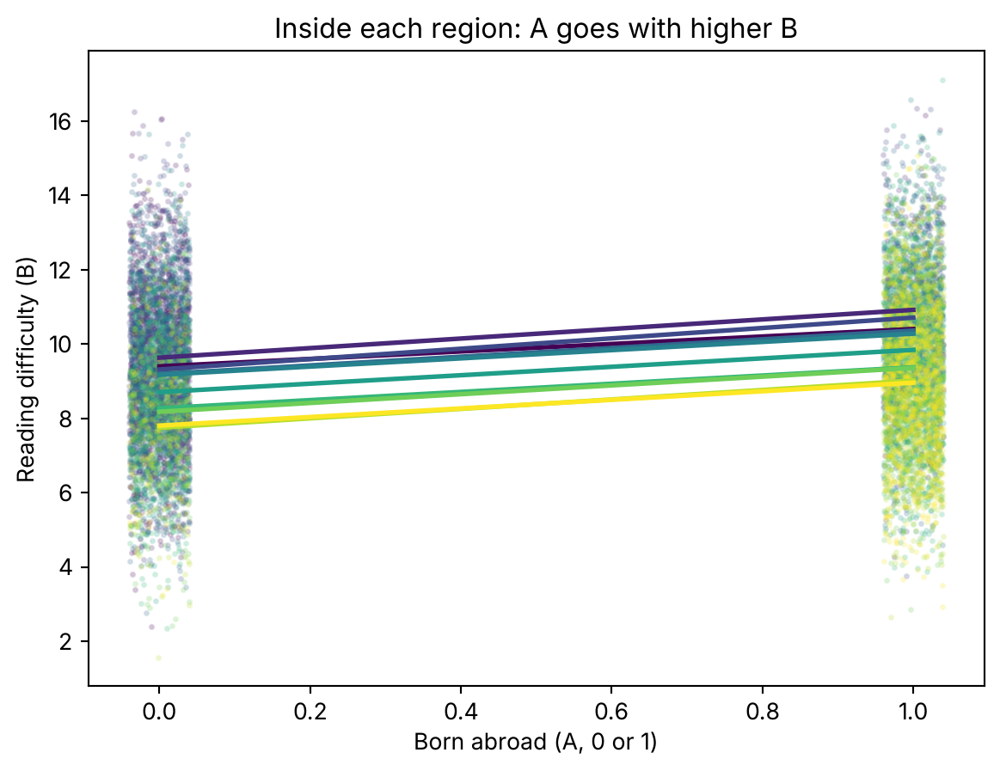

import numpy as np
import matplotlib.pyplot as pltProvinces with more X can have less Y, even when people with X have more Y
causality
simulation
python
A correlation between regions can have the opposite sign to the one between the people inside them. A simulation shows where the flip comes from.
In 1950, William Robinson took the 1930 US census and correlated two things across states: the share of people born abroad and the share who couldn’t read.
He got −0.53. The more immigrants in a state, the lower its illiteracy.
Then he correlated the same two things across people, and got +0.12. Immigrants were more likely to be illiterate than natives.
Same census, same two variables. The sign flips depending on what you put in each row.
Why would states and people disagree
Immigrants went to the states where the native population was already more literate. Those states had little illiteracy to begin with.
So there are two things going on at once. Person by person, being foreign-born goes with a bit more illiteracy. Between states, having more foreign-born goes with a much lower baseline of illiteracy.
When you take one row per state, the second thing swamps the first. The average of a state forgets who is who inside it.
That’s all. Nobody made a mistake with the arithmetic. The correlation of averages and the correlation of people answer different questions.
A simulation with the same mechanism
I don’t have Robinson’s census, so I’ll build the mechanism by hand. Ten regions, a thousand people in each.
Read \(A\) as being born abroad and \(B\) as a reading-difficulty score. Inside a region, being foreign-born adds 1.2 to your score. Between regions, the more foreign-born people there are, the lower the baseline.
The share of people with \(A\) goes from 10% in the first region to 90% in the last. The baseline of \(B\) drops 2 points along that range, plus a little regional noise.
np.random.seed(1930)
n_regions, n_per_region = 10, 1000
share_a = np.linspace(0.10, 0.90, n_regions) # share of people with A, per region
base_b = 10 - 2.5 * share_a + np.random.normal(0, 0.15, n_regions) # lower where A is common
effect_a = 1.2 # within a region, A adds this to B
noise_sd = 2.0
region = np.repeat(np.arange(n_regions), n_per_region)
a = (np.random.rand(region.size) < share_a[region]).astype(float)
b = base_b[region] + effect_a * a + np.random.normal(0, noise_sd, region.size)Now the two correlations. First one row per region: the share of people with \(A\) and the mean of \(B\). Then one row per person.
mean_a = np.array([a[region == r].mean() for r in range(n_regions)])
mean_b = np.array([b[region == r].mean() for r in range(n_regions)])
r_regions = np.corrcoef(mean_a, mean_b)[0, 1]
r_people = np.corrcoef(a, b)[0, 1]
print(f"Correlation between the 10 regional means: {r_regions:+.2f}")
print(f"Correlation between the 10,000 people: {r_people:+.2f}")Correlation between the 10 regional means: -0.88
Correlation between the 10,000 people: +0.13Negative for regions, positive for people. The flip is there.
My numbers aren’t a replication of Robinson’s. The regional one is much stronger than his −0.53, and the individual one is close to his +0.12 by accident. I picked the parameters to show the mechanism, not to match the census.
What the regions see
Here are the ten regions as ten dots.
slope, intercept = np.polyfit(mean_a, mean_b, 1)
fig, ax = plt.subplots()
ax.scatter(mean_a, mean_b)
xs = np.array([mean_a.min(), mean_a.max()])
ax.plot(xs, intercept + slope * xs, color="grey")
ax.set_xlabel("Share born abroad (A)")
ax.set_ylabel("Mean reading difficulty (B)")
ax.set_title("Across regions: more A, lower B")
plt.show()
If this were your table, you’d write that where \(A\) is common, \(B\) is low. And you’d be right about the regions.
Then you would say something about people. That’s where it goes wrong.
What the people see
Inside each region the picture is the opposite. Here’s every person, coloured by region, with a fitted line for each region.
fig, ax = plt.subplots()
cmap = plt.get_cmap("viridis")
for r in range(n_regions):
m = region == r
color = cmap(r / (n_regions - 1))
jitter = np.random.uniform(-0.04, 0.04, m.sum())
ax.scatter(a[m] + jitter, b[m], s=3, alpha=0.15, color=color)
s, i = np.polyfit(a[m], b[m], 1)
ax.plot([0, 1], [i, i + s], color=color, lw=2)
ax.set_xlabel("Born abroad (A, 0 or 1)")
ax.set_ylabel("Reading difficulty (B)")
ax.set_title("Inside each region: A goes with higher B")
plt.show()
Ten lines, all going up. And they are stacked: the purple regions, with little \(A\), sit high. The yellow ones, with a lot of \(A\), sit low.
The slopes and correlations inside each region all say the same thing: up.
slopes = [np.polyfit(a[region == r], b[region == r], 1)[0] for r in range(n_regions)]
r_within = np.array([np.corrcoef(a[region == r], b[region == r])[0, 1]
for r in range(n_regions)])
print("Within-region slopes: ", np.round(slopes, 2))
print("Within-region correlations:", np.round(r_within, 2))Within-region slopes: [1.01 1.29 1.4 1.17 1.11 1.14 1.1 1.18 1.27 1.16]
Within-region correlations: [0.15 0.25 0.29 0.26 0.26 0.28 0.25 0.26 0.23 0.17]Every slope is close to the 1.2 I put in. Every correlation is positive, between 0.15 and 0.29.
The stacking of the lines is what pulls the regional means down. The sign you get depends on whether a row is a region or a person.
One more thing. Across all 10,000 people the correlation is +0.13, below the +0.24 you get on average inside regions. Pooling regions with different baselines drags it down, even with people as rows.
Why this matters to you
You’ll run into this in any table with one row per province, municipality or shop. Spain’s statistics office, the INE, publishes hundreds of them.
You compute a correlation on that table. It’s a fact about the rows. Say “the shops with more X have less Y” and you’re fine. Say “customers with X have less Y” and the table can’t back you.
I spent a long time reading these correlations as if they described individuals. The data never told me otherwise, because the table has no individuals in it.
So before you write “people with X are less likely to have Y”, check what a row is. If it’s a region, the sentence is about regions. If you want the one about people, you need rows of people.